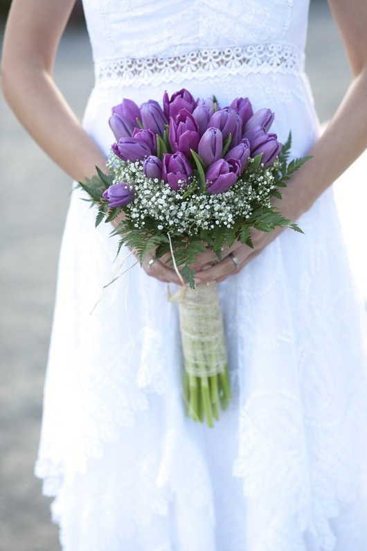

¿No sabes qué flores elegir para tu ramo y para la decoración en general de tu boda? ¡Nosotros en Haus Flowers te ayudamos a elegirlas! Y es que las flores tienen algo muy especial y una boda sin flores no es una boda. Será por su aroma, quizás por su color o tal vez porque nos regalan un soplo de naturalidad, frescura y veracidad en un mundo en el que lo artificial parecía ganar la batalla. Y es que son nuestro talismán del amor, nuestra oda a la alegría, nuestra manera de homenajear, cada día, lo bonita que es la vida. Porque son preciosas e imprescindibles en una boda, te mostramos 5 flores perfectas para tu ramos de novia o para decorar cada rincón de tu día.
La decoración con flores varía según el tipo de evento y lugar que hayas elegido para tu boda. Es como la carta de presentación con la cual, se sabrá cómo se desarrollará el resto de tu fiesta.
Para decorar la boda perfecta puedes elegir flores más clásicas, aquí te dejamos algunos ejemplos:
Las Peonias son flores muy perfumadas que, si bien no son muy elegidas por las novias en general, brindan un toque romántico y glamoroso al buquet.Con un especial aprecio en los países de oriente, las peonias simbolizan la sinceridad y los sentimientos reales.Ir al inicio
Este híbrido entre la rosa y la peonía es una de las flores mas versátiles en cuanto a lo que decoración se refiere. Florecen a finales del invierno con capas y capas de fino tejido bien envuelto en pétalos que simbolizan el “encanto radiante”. Están disponibles en un arcoiris de colores que las convierten en el comodín más elegante de la decoración y es que a pesar de estar ensombrecida por las rosas, las dalias o las peonías, el ranúnculo no tiene nada que envidiarlas. ¿Su simbología? Representan el encanto y el atractivo a través de las culturas y generaciones.
La aceptación de las ranúnculos en nuestra historia fue difícil, primero se conocieron en la época del rey de Francia Luis IX en el siglo XIII, pero en realidad a lo largo del continente no les hicieron mucho caso. Fue hasta el siglo XVII con Mohammed IV, sultán de Marruecos, que estas flores se reconocieron por toda Europa.
Son flores pequeñas de muchos pétalos que tienen un ligero parecido a la camelia. E incluso podrías decir que tienen el tipo de una peonía en pequeño. Es una de las flores que mayor número de pétalos tiene. Son excelentes flores para decoración por su tamaño y variedad de colores. Son varias florecitas en un mismo tallo lo cual le da un movimiento especial al arreglo o florero donde las pongas.
Recuerda siempre tener tus ranúnculos en agua fresca y verás que las flores más pequeñas abren. Pueden durar de 5 a 10 días. Si tienes frascos en distintas formas y tamaños puedes hacer una composición poniendo 1 o 2 flores en cada uno.
Un ramo de estas flores le dice a la mujer que lo recibe “Eres divina, radiante y encantadora” o “Tu cuerpo es hermoso”. Aun así, como la mayoría de las flores, también tienen un significado particular de acuerdo al color que entreguemos.
Regalar un ramo de ranúnculos, estará diciendo “eres radiante y encantadora”. Si regalamos un ramo de francesillas de color blanco, estamos diciendo a quien lo recibe, que ha seducido nuestro interior.
Los ranúnculos son unas plantas de unos veinte centímetros de altura que florecen a finales de invierno y principios de primavera después de ser sembrados en otoño y que estarán en flor hasta verano.
Ir al inicioAunque asociado a los Países Bajos, esta flor es en realidad nativa de Persia. Representa los “años felices”, todo un símbolo del amor perfecto y duradero, que cual cisne majestuoso se convierte en una opción muy significativa para los enlaces. Impoluta y solemne, se cultivan en una amplia gama de colores disponibles durante gran parte del año, permitiéndonos realzar desde los puntos más casuales, hasta los más refinados. ¿Qué tal regalarle bulbos de tulipán a los invitados para que el amor siga creciendo en todas las casas? Úsala como nexo de unión en vuestro enlace y eleva rincones como el seating plan, la mesa de firmas o el candy bar… 
Los tulipanes representan el amor perfecto y eterno, basado incluso en una antigua historia de amor popular en el medio este (la historia de Shirín y Farhad). Al igual que en el resto de las flores, cada color posee un significado propio: los tulipanes rojos son toda una declaración de amor, mientras que los tulipanes amarillos representan el amor desesperado (como verán, el amarillo no es muy favorable en muchos casos).
Los tulipanes rosas tienen un significado parecido al rojo, más que nada para demostrar amor, atención y apego.
Los tulipanes amarillos se relacionan con la amistad y con la alegría.
Los tulipanes blancos son un símbolo de pureza y son usados en arreglos florales para las bodas y representan un amor de excelencia.
Los tulipanes son un símbolo del amante perfeto, la pasión y el romanticismo. El tulipán es un símbolo de amor sinero. Es una flor incríblemente romántica que al regalarla expresas enamoramiento, pasión, amor incondicional, amor puro, etc. Su significado varía en los tonos de color de este.
Las flores de la vieja escuela están de vuelta y vienen dispuestas a despertar los sentidos. Sutilmente perfumados, con volantes como tutus, si bien su versión roja está asociada a la pasión en general y lo español en particular, en rosa son puro candor y en blanco la honradez hecha flor. Además de ser una opción de lo más económica, lo que la hace perfecta para sustituir a las rosas y decorar los centros o hacer guirnaldas, también son símbolo de distinción y nobleza. Y es que la flor más subestimada del mundo es también una de las más versátiles. ¿Qué tal un photocall con claveles colgantes como telón de fondo? Durarán más que la mayoría de flores y secarán genial para un recuerdo post-boda.
La flor del clavel es muy apreciada porque es de colores vivos y variados. Se caracteriza por poseer múltiples pétalos de bordes irregulares y quebrados que le da una dimensión de abundancia y alegría.
El cultivo del clavel de exportación, también llamada de flor cortada, es una de las mayores industrias del rubro de la exportaciones de flores en Latinoamérica.
La flor del clavel tiene significados diferentes según su color. Los claveles blancos, por ejemplo, representan paz y pureza. Los claveles rojos significan amor sincero y los claveles rosados indican amistad o amor maternal. Los claveles son una de las flores más regaladas del mundo.
En este sentido, la flor de los claveles es considerado una de las flores más bellas del mundo. Además, la flor del clavel florece durante todo el año.
Aquí en Haus Flowers te ayudaremos, primero piensa cuáles son tus intenciones. A menudo las flores son utilizadas para ‘impactar’ a una mujer y una de esas opciones es el clavel, una flor con ‘mucha vida’. El clavel es el rey de muchas bodas, pero también uno de los recursos más típicos para el Día de la madre –claveles rosados que aportan un amor tierno-. O simplemente para conseguir una sonrisa de la persona a la que queremos, porque uno de los significados que se otorgan a esta flor es el de la fascinación.
Si pretendemos dar un paso más en nuestra intención a la hora de regalar un clavel, debemos detenernos en el color elegido. No es lo mismo optar por un clavel rojo que uno blanco. El rojo –por su intensidad- simboliza un amor profundo con el que se pretende lograr una conquista. Es la pasión personificada. El blanco representa el amor puro y, en ocasiones, también se asocia a una amistad fuerte y sincera, con sentimientos puros y sinceros.
Y, aunque parezca mentira, también hay una opción para mostrar rechazo. Se trata del clavel amarillo, asociado a la decepción en alguien, aunque esta acepción tiene mucho de mito y poco de realidad.Ir al inicio
La suave y romántica sombra púrpura de la lavanda funciona de maravilla con casi cualquier combinación, siendo los colores neutros los más populares. Ella es sencilla y humilde y sin embargo, es conocida como la diosa del aire. Presta atención a tus próximos eventos, sobre todo los rurales, y comprobarás cómo, cada vez más, gana protagonismo en las celebraciones de bodas: adornando desde una mantelería de lino a refrescantes limonadas o fabulosos regalitos para invitados y porqué no, hasta la propia tarta nupcial. ¿En casa? Acompaña tus velas con ellas para aromatizar tu hogar y úsala de marca páginas en tus libros preferidos. ¿A que ya te estás relajando sólo de imaginártelo?
La lavanda es una variedad floral muy versátil ya que da mucho juego y siempre queda bien. Puedes conseguir una ambientación única en tu boda, sobre todo si la celebras de día, al aire libre o en un entorno rústico. Perfecta para crear pequeños bouquets en las mesas, para decorar los bancos de la iglesia, para personalizar las tarjetas, o confeccionar el ramo de novia. También podrás dar un toque de arte floral en miniatura colocando en la solapa de los invitados un pequeño detalle de lavanda.
Las flores de lavanda tienen una linda forma de espiga que se convierte en el accesorio ideal para cualquier espacio, tallos largos y estrechos que llenan de armonia. Además, su fragancia es reconocida por grandes marcas de perfume, eso sin cuntar que tiene grandes propiedades curativas pero ahora en Haus Flowers apostamos por las coronas de lavanda para decorar las puertas. Nos encanta esta idea de decoración porque aporta a todo el espacio un toque muy rústico y romántico y, además, estas coronas son capaces de crear ambientes muy cálidos.
Nos encanta la lavanda en floreros para la decoración de los hogares. Nosotros apostamos por floreros de materiales naturales, como por ejemplo: maderas, forjas, etcétera. No obstante, también puede quedar muy bien colocar un poco de lavanda en un tarro de cristal.
Ir al inicioNo es lo mismo que te cases en otoño-invierno a que lo hagas en primavera-verano, cada estación del año tiene para nosotros flores diferentes y dependiendo del clima puedes utilizar unas u otras para que no se dañen. Por ejemplo, en otoño encontrarás los crisantemos, las dalias, los alcatraces o la flor estrella. El brezo es un arbusto muy elegante y lleno de color que en cualquier escenario se verá hermoso.
En el verano necesitas flores muy resistentes a las altas temperaturas y que luzcan frescas y hermosas durante todo el día. Algunas que puedes utilizar son los jazmines, lilas, gardenias, magnolias, etc.
Algo importante que debes considerar es el lugar en donde va a ser la boda, ya que no todas las flores duran lo mismo; por ejemplo, si te casas en la ciudad seguramente utilizarás distintas flores a que si te casas en la playa. El clima es algo clave, pues de esto dependerá la duración y frescura de la flor, también recuerda que deben estar muy bien hidratadas para que puedan durar todo el evento, pues de lo contrario correrás el riesgo de que tus flores se mueran antes de que pises el altar, o de que la recepción parezca más un funeral que una celebración nupcial.Ir al inicio
Adaptar la elección al tipo de celebración
La decoración con flores varía según el tipo de evento y lugar que hayas elegido para tu boda. Es como la carta de presentación con la cual, se sabrá cómo se desarrollará el resto de tu fiesta.
Otro factor importante que deberás tomar en cuenta, será el lugar de la boda. No es lo mismo una decoración para un lugar al aire libre que para un hotel o restaurante en el centro de la ciudad.
Para decorar la boda religiosa puedes elegir flores más clásicas. El estilo depende de la arquitectura del lugar, aquí te dejamos algunos ejemplos:
-En iglesias románicas, te recomendamos flores de formas redondeadas, ya que son dulces, elegantes y concuerdan con ese estilo del lugar. Las rosas u hortensias son ideales.
– Para iglesias góticas utiliza arreglos con flores alargadas que combinan perfecto con la arquitectura. Flores en espiga como gladiolas y nardos marcan el paso para el resto de la decoración. Y flores como azucenas o gerberas se pueden combinar con las anteriores.
– En iglesias modernistas usa arreglos más lineales y en forma de L. Flores como el allium o cebolletas, anturio, liatris o pincel de pintor y las hojas verdes grandes serán las más indicadas para tu decoración.
Una decoración que puede llevar tu iglesia y servirá como punto diferenciador, que además se adaptará a todos los estilos es envolver las columnas con guirnaldas, las cuales quedan excelentes combinadas con margaritas o velo de novia. El color blanco además de ser elegante le da un toque de fineza a tu decoración, combina con el vestido de la novia y lo puedes utilizar con toda confianza.
Las parejas más atrevidas usan distintas formaciones que se adaptan a la perfección a su estilo y personalidad.
El orden de la decoración será el siguiente: en el centro y delante del altar suelen ir los arreglos más grandes, ya que será el lugar más fotografiado durante la ceremonia. En el altar distribuye otros arreglos de forma simétrica y que puedan ser vistos desde todos los ángulos del lugar.
Para las bodas civiles las flores hoy en día suelen ser las protagonistas de estos eventos.
También es importante que tomes en cuenta la hora de tu evento. Si es por la mañana y en interior o exterior. Decora la mesa central con un arreglo o echa mano de un arco floral para decorar la ceremonia.
Utilizar velas para dar un toque más acogedor, es el elemento diferenciador de una boda de día de las de noche.
Otro aspecto que debes tomar en cuenta es el tipo de flor que quieres, así como las tonalidades y los colores que te gustaría que resaltaran. Recordemos que en este punto hay muchos gustos, pues existen mujeres a las que les encanta que todo combine y esté perfectamente en armonía con los mismos tonos; por ejemplo que buscan que los centros de mesas sean en las mismas tonalidades que los vestidos de las damas. Si aún no lo tienes muy claro, descubre cómo elegir los colores de la boda.
Por otro lado, hay novias que prefieren los contrastes, y por eso es muy importante recurrir a un experto –en este caso, tu florista–, pues es él quien te dirá cuáles son los tonos combinables o que tengan mayor sinergia.Ir al inicio

Tomar en cuenta el lugar de la boda
Si te vas a casar en un espacio abierto puedes decorar con flores y plantas silvestres que vayan con el entorno y las paredes del lugar, así como de la vegetación que haya en la zona. Si por el contrario, te casas en un lugar cerrado deberás tomar en cuenta la decoración y combinar tus arreglos con el salón. Para crear armonía entre todos tus elementos elige un entorno dominante y destacable del resto.
También lee: cómo elegir el lugar de la boda. 5 aspectos para que tu celebración sea un sueño
Y de aquí pasamos a un tema súper importante: los centros de mesa. Estos a veces son un punto un poco controversial, pero súper dinámico.
Recuerda que las opciones son inmensas, pues tienes una gran variedad de ideas para escoger, desde arreglos súper altos, bajos, con un estilo deconstruido, etc. Pero siempre, antes de que decidas cuál será el indicado debes considerar los siguientes puntos:
No olvidar los espacios y rincones
Todos tus arreglos florales deberán ir en armonía en cada rincón de tu evento creando espacios bellos y acogedores para todos tus invitados. Debes saber diferenciar esta decoración de donde será el cocktail y el banquete. La del cocktail varía si tu evento es de día o de noche y si es un espacio abierto o cerrado.
Si la boda es a medio día, la pareja podrá elegir sus arreglos para decorar los rincones del jardín y podrán ser similares a los de la ceremonia y el resto de la boda. Si la boda es de noche la luz toma el protagonismo (velas, guirnaldas de flores, etc.)
La decoración del salón es siempre objeto de atención. Puedes utilizar pequeños arreglos como centros de mesa si lo que buscas es un estilo más clásico.
Actualmente está en tendencia tener arreglos altos y asimétricos, guirnaldas naturales que recorran tus mesas imperiales y que las hagan destacar.Ir al inicio
Tanto si tú estás checando este asunto, como si has elegido a un wedding planner para que se encargue del tema, piensa en el tipo de decoración que deseas tener y visualízala en el lugar que hayas escogido para casarte.
Visitar el lugar es muy importante, así como visitar la floristería donde encargarás las flores. Puedes apoyarte del florista para que te guíe con las flores que están en temporada y prever que tenga la cantidad que necesitas para tu boda en la fecha elegida. Esto para evitar cualquier contratiempo de última hora. ¡No te confíes!
La parte de hacer el presupuesto de tu boda y dejar una cantidad asignada para las flores es medular para decidir el tipo de arreglos que tendrás. Con esto sabrás la cantidad que vas a destinar para este tema, ya que cada flor o planta tienen costos diferentes.